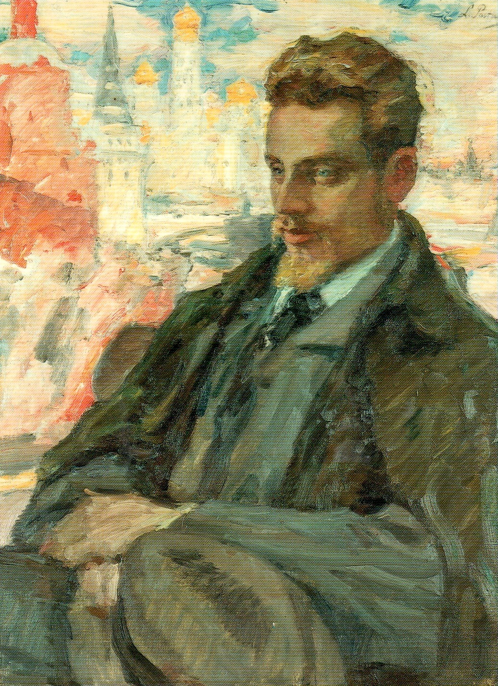
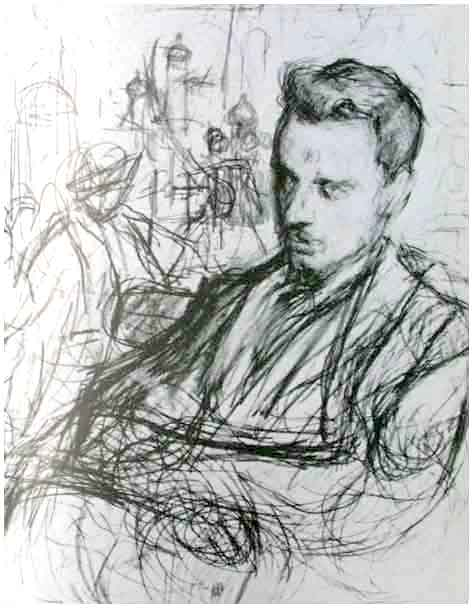

Portrety Rilkego
Leonid Pasternak 1928
„Rilke w Moskwie”, jeden z nielicznych olejnych portretów poety, namalowany przez Leonida Pasternaka już po śmierci Rilkego, w roku 1928, na podstawie dwóch szkiców ołówkiem, sporządzonych w roku 1900 w trakcie drugiej podróży poety do Rosji.
Portret olejny pędzla Pasternaka z roku 1928
Rilke nawiązał serdeczne stosunki z Pasternakiem podczas swej pierwszej wizyty w Moskwie. Wysoko sobie cenił wiersze jego syna Borysa, które poznał w latach dwudziestych w przekładach na francuski. Borys Pasternak uważał Rilkego za największego z żyjących poetów europejskich.
Jeden ze szkiców Pasternaka z roku 1900